Experience
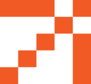
2025
Boston Bioprocess
Founding Product Designer
2025
Featurely AI (Stealth)
Product Designer
2024
Toyota Mobility Foundation
Product Designer
2023
IU Redlab
Product Designer (UX Lead)
2022
Indiana University
UX Researcher / GRA
2020
Indesign Elements Studio
Design Intern
Selected works
1
Company
Boston Bioprocess · Yanta
Project
AI assistant for Yanta’s analysis notebook, so scientists can query and chart their data without writing a line of SQL.
Impact
V0 testing – 87.5/100 on UX-Lite
2
Company
Boston Bioprocess · Yanta
Project
Automated mapping of raw instrument data into Yanta, with scientists keeping the final say on every import.
Impact
V1 testing – 91.7/100 on UX-Lite
3
Company
Boston Bioprocess · Yanta
Project
Shaping Yanta’s brand, website, and design system as one, creating a recognizable identity that holds together across every touchpoint.
Impact
Shipped in three weeks: 280+ component variants

4
Company
Boston Bioprocess · Yanta
Project
Gantt-style planning board for bioprocess labs, so teams can plan runs, people and equipment in one place.
Impact
V1 testing – 93.8/100 on UX-Lite
Selected works
View all worksWhat others think
Here’s what my supervisors, mentors, and colleagues have to say about me
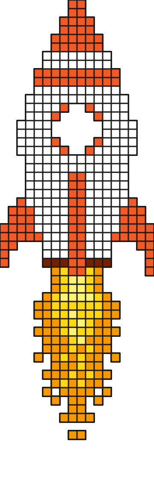
Boston Bioprocess
…Building Yanta was a true 0-to-1 effort. Anamitra owned the entire product experience… he also stepped well beyond product design… setting the visual direction for our marketing materials and our LinkedIn presence. … I watched him grow from intern to the person we relied on for design decisions across the company.
Boston Bioprocess
…he designed foundational elements ranging from the underlying design system to critical modules including AI assistant, scheduler, data transformer, invoicing… What truly sets him apart is his rare ability to translate incredibly complex scientific workflows into intuitive digital products.
Boston Bioprocess
…He consistently adapted his design patterns to fit strict engineering constraints without sacrificing the user experience. This pragmatic, engineering-friendly approach was directly responsible for ensuring major features, like our highly successful bioprocess Scheduler, were shipped efficiently and on time.
Boston Bioprocess
…Anamitra never just took a spec and made it look good. He questioned things before building anything: who is this for, what problem does it solve, is there a simpler way? That mindset is rare and very much needed today, and it made him a true partner to our engineering team, not just a designer handing off mockups.
Boston Bioprocess
…Anamitra is one of the most talented and hardworking designers I’ve worked with. Over a year of building Yanta together, I saw him turn complex scientific workflows into designs that feel simple. He has strong ideas of his own. He questions requirements, argues for the user, then commits fully once the team decides.
Myna AI
Anamitra has demonstrated a strong understanding of user-centered design principles and techniques. When our team faced challenging situations, Anamitra exhibited excellent problem-solving skills and a positive attitude. I enjoyed working alongside Anamitra and learned a lot from their creativity, attention to detail, and ability to communicate effectively within our team.
Toyota Mobility Foundation
Anamitra’s strengths lie in his work ethic, innovation, and ability to connect with clients and coworkers. In this project, which involved a multidisciplinary team, Anamitra was a valued member and contributed heavily with his design, human-machine interaction (HMI), and data analytics expertise.
Toyota Mobility Foundation
Anamitra demonstrated excellent technical skills in the field of UX research and design and is an effective team member in a multidisciplinary team setting. Anamitra and his team delivered beyond the project requirements, bringing their ideas to life through rigorous testing and validation.
Toyota Mobility Foundation
I highly recommend Anamitra for his exceptional ability to conduct in-depth explorative research. His work has provided comprehensive insights that have been invaluable in informing and improving our approaches to addressing food insecurity and, in turn, serving those in need more effectively.
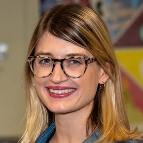
Olivia StewartClient · Director, Westminster Pantry (WNS)Mentor
Anamitra displayed strong communication and problem-solving skills. His eagerness to learn and openness to feedback were impressive.
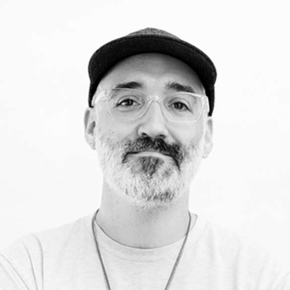
Carl DeCaireHead of Product & Design, Step Finance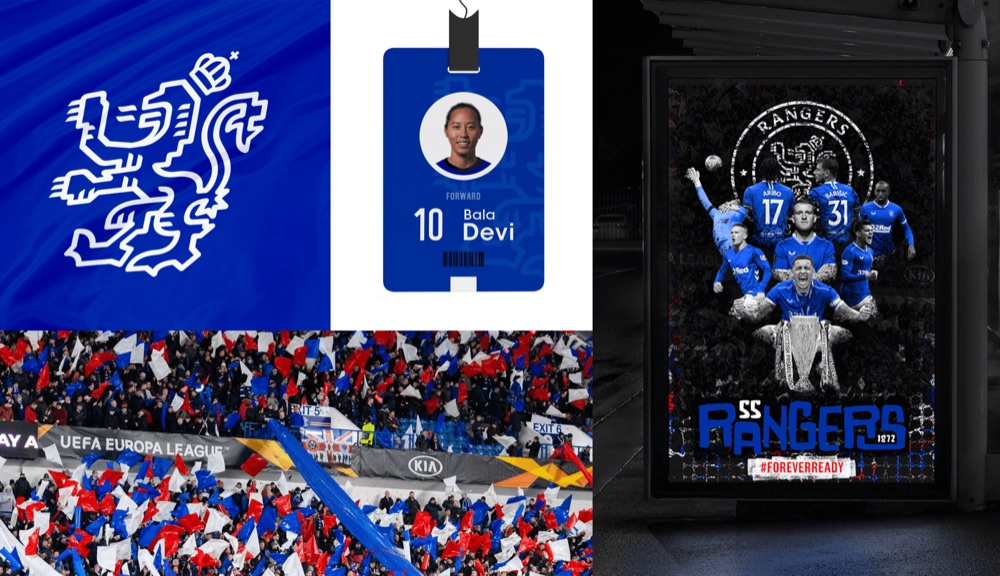
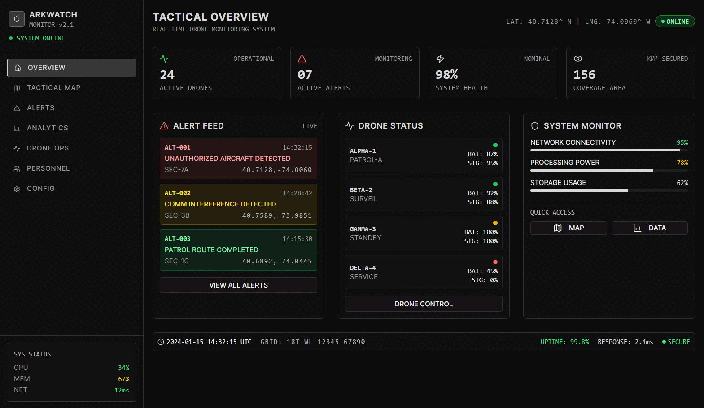
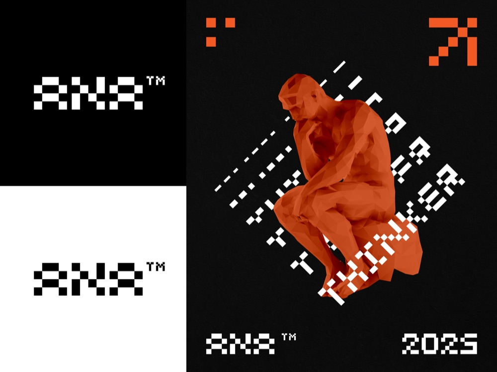
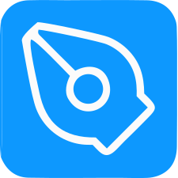
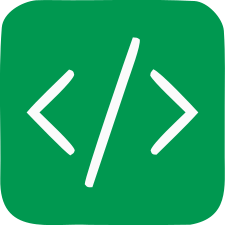
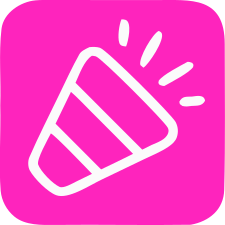
Plot DO vs time for Batch 333
62%
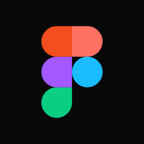
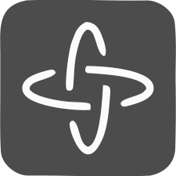
Want to see what I’m tinkering with?